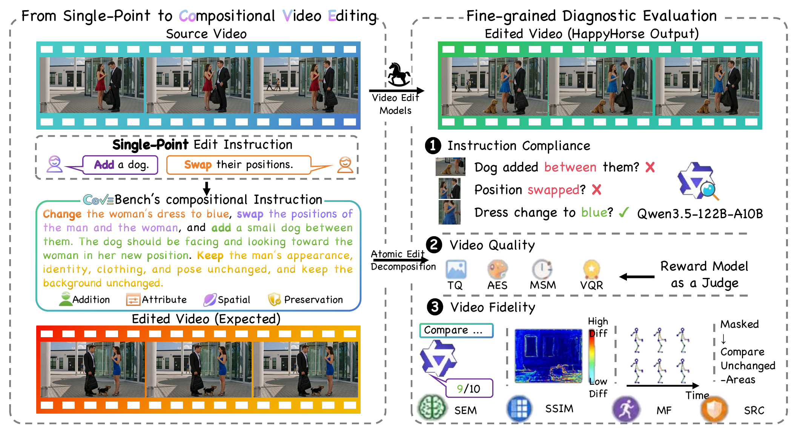
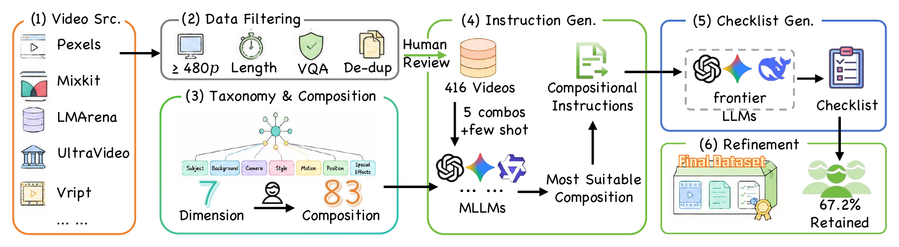
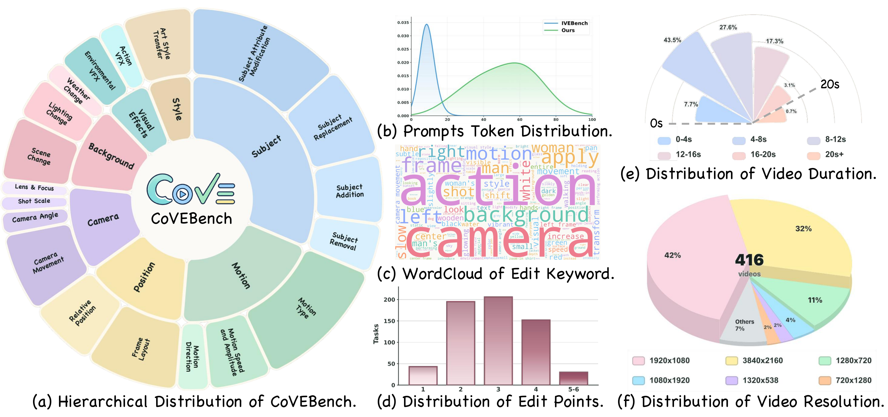
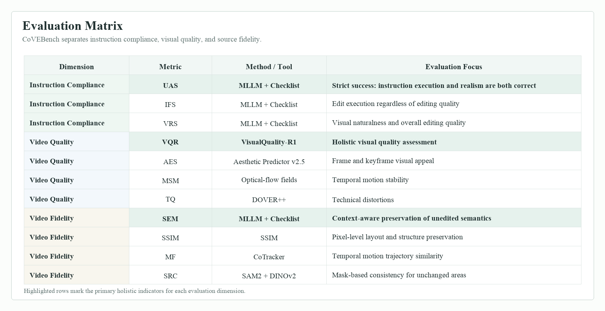
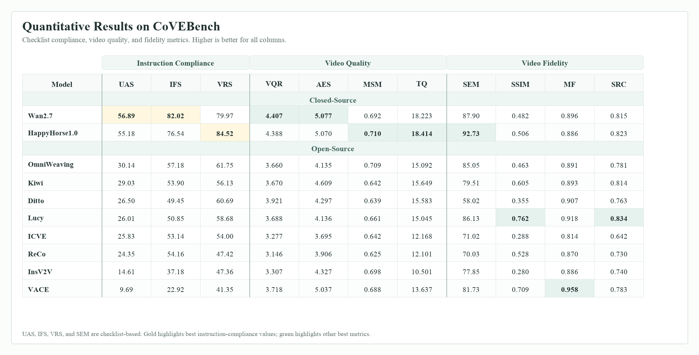
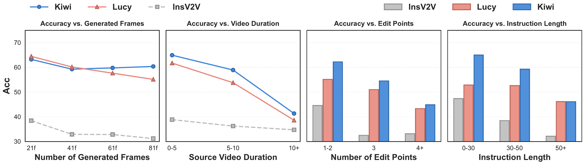
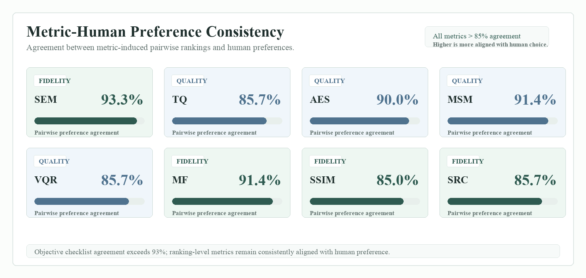
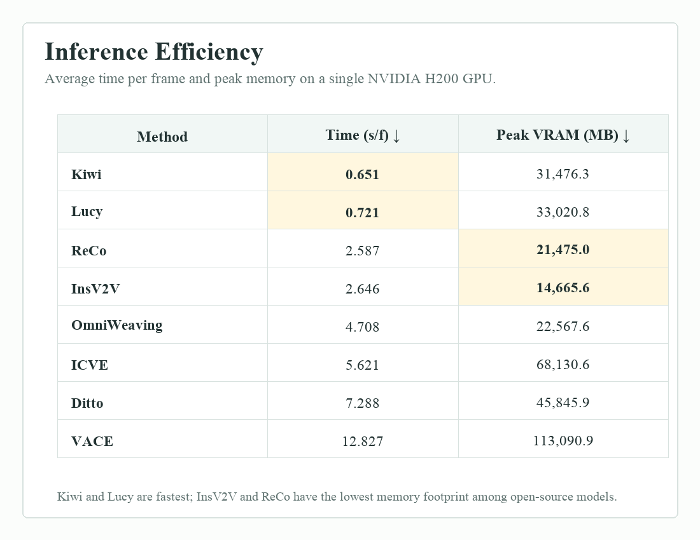
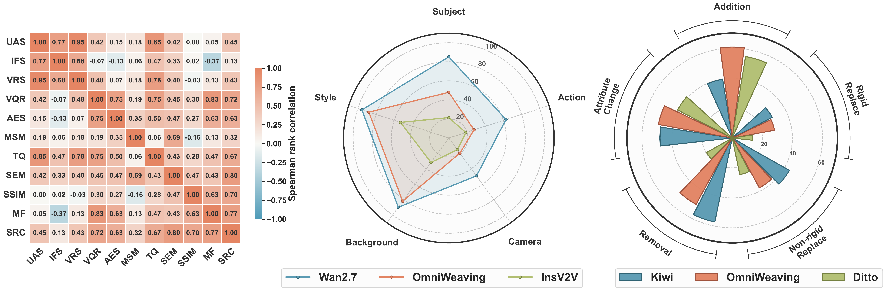
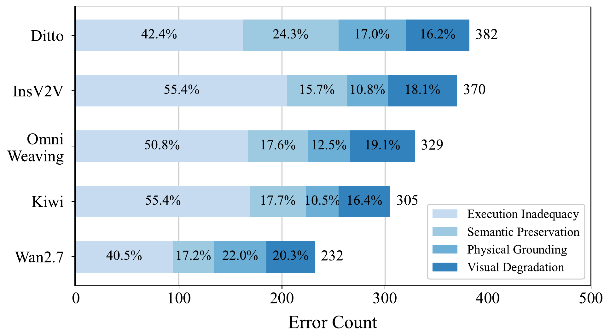

Closed-source models are stronger, but not solved
Wan2.7 and HappyHorse1.0 reach the best UAS scores, yet even the strongest model remains under 57% union accuracy on compositional edits.
Compositional video editing evaluation
A diagnostic benchmark for real-world, multi-point video editing prompts, with fine-grained checklist evaluation across instruction compliance, video quality, and source fidelity.

Benchmark construction
The benchmark emphasizes realistic compositional instructions instead of isolated, single-edit prompts. Videos are filtered for visual quality, editability, duration, resolution, and duplicate removal before being paired with diverse instructions and verifiable checklist questions.


Evaluation protocol
CoVEBench separates whether an edit was executed, whether the output remains visually plausible, and whether unrelated source content is preserved, enabling failures to be localized beyond a single aggregate score.

Main results
Strong proprietary systems lead the benchmark, but absolute union accuracy remains far below individual instruction-following and realism scores. This gap indicates that models can partially execute requested changes while still failing the full compositional requirement.

Wan2.7 and HappyHorse1.0 reach the best UAS scores, yet even the strongest model remains under 57% union accuracy on compositional edits.
Some systems improve instruction following by making stronger edits, but this can reduce semantic preservation and alter regions that should remain unchanged.
Joint editing achieves 30.63% UAS versus 23.70% for sequential editing, avoiding error accumulation and overwriting from intermediate generations.
Further analysis
Additional experiments show that longer temporal spans, more edit points, and longer instructions amplify the difficulty. Metric-human agreement remains high, supporting the evaluation protocol.



Diagnostic views
Aggregate scores hide important differences between editing categories. Camera control, motion edits, and subject operations remain particularly challenging, while style and background changes are more tractable for current models.


Examples
CoVEBench pairs visual samples with detailed checklist supervision, enabling model outputs to be inspected beyond a single global score.
Citation
If you find this benchmark useful for your research, please cite the project.
@article{wu2026covebench,
title = {CoVEBench: Can Video Editing Models Handle Complex Instructions?},
author = {Jiangtao Wu and others},
year = {2026}
}